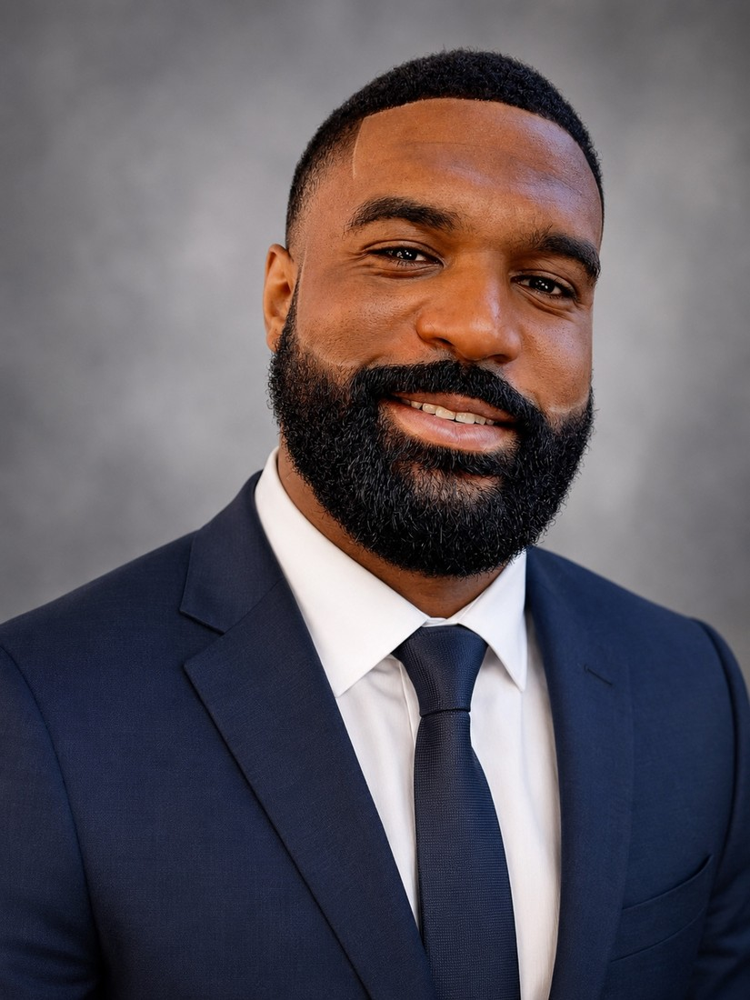

Prepared for Sciemo · Customer Success & Support Engineer
Helping users make sense of complex systems.
I’m Derick Gary, a Marine Corps veteran, Fire Engineer, and Information Technology student. I bring hands-on technical support, practical instruction, and experience helping people move to new systems.
Jacksonville, North Carolina BS in Information Technology in progress

01 / Work samples
See how I approach support.
These original demonstration materials show how I would guide a user, investigate a problem, and keep the next step clear.
One question.
A complete support response.
A customer’s monthly summary does not match the detail export. Follow the request from intake and reproduction to the engineering handoff and customer confirmation.
Explore the support caseGetting started with a new workspace
A first-session guide with practical checks, a teach-back exercise, and a clear next step.
Read the sample Knowledge baseSign-in and MFA troubleshooting
Separate account, identity-provider, and application issues while giving users a clear path forward.
Read the sample Knowledge baseWhen a user cannot open a workspace
Clarify the task, check approved access, and document the evidence needed for escalation.
Read the sample Knowledge baseMissing data or an unexpected total
Compare filters, dates, measures, and refresh information before diagnosing a data problem.
Read the sample Customer enablementClient office hours that lead to action
A live-session plan with practical instruction, unresolved-item tracking, and useful follow-up.
Read the sample Service operationsTriage, ownership, and follow-through
A proposed approach to request classification, escalation, customer updates, and closure.
Read the sample Product feedbackTurn recurring confusion into product feedback
A sample feature request that connects customer needs with acceptance criteria and validation.
Read the sampleAll work samples in this section use a fictional planning application. They illustrate my approach and are clearly labeled as demonstrations.
02 / Actual experience
Support grounded in real work.
Moving an equipment inventory into ESO
As Protective Equipment Manager, I reviewed Excel source documents and created more than 2,700 equipment records over several months.
Helping implement First Due
I assisted the 2025 transition from Emergency Reporting, helping migrate more than 1,500 hydrant records and their associated histories.
Supporting a change in field technology
I helped implement and troubleshoot a rollout of approximately 24 iPads across 12 apparatus and four stations.
03 / About me
A career built around helping people.
My work has ranged from supporting communications networks and training personnel in the Marine Corps to writing SOPs and helping public-safety teams adopt new technology. I listen for the task behind a question, explain practical steps, and document what the next person needs to know.
Sciemo’s focus on customer training, useful documentation, and thoughtful support gives me a clear way to apply that experience as I continue my IT education.
Connect on LinkedInBS in Information Technology
Liberty University Online
Data Networking and Security
Expected Fall 2027 · First-semester GPA 4.0
AAS in Emergency Management
Fayetteville Technical Community College
Jacksonville Firefighter of the Year, 2024
Piney Green Firefighter of the Year, 2020
Navy and Marine Corps Achievement Medal
Application materials
Continue the conversation.
Download the resume and cover letter prepared for Sciemo’s Customer Success & Support Engineer role.